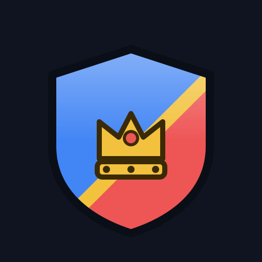

FIRE
しちゅーず開発室
FIREを目指して、Android のアプリを書いています。
-
Effera
動画を指で編集するアプリ
テスト中 詳細 -

SEKI
11×11で指すボードゲーム
テスト中 詳細 -
不思議の図書館
漢字のレベルに合わせた小説を読むアプリ
テスト中 詳細 -
FretDrop
ギターを譜面に合わせて練習するアプリ
テスト中 詳細
よくある質問
しちゅーず開発室とは何ですか
FIREを目指して、Android のアプリを書いています。
どんなアプリがありますか
動画編集の Effera、11×11のボードゲーム SEKI、漢字のレベルに合わせた小説アプリ 不思議の図書館、ギター練習の FretDrop は、クローズドテスト中です。
クローズドテストにはどう参加しますか
テスト中のアプリは、詳細ページの「テストに参加する」から手続きします。Google グループに参加し、同じ Google アカウントで Google Play を開き、インストールして一度起動します。iPhone ではインストールできません。